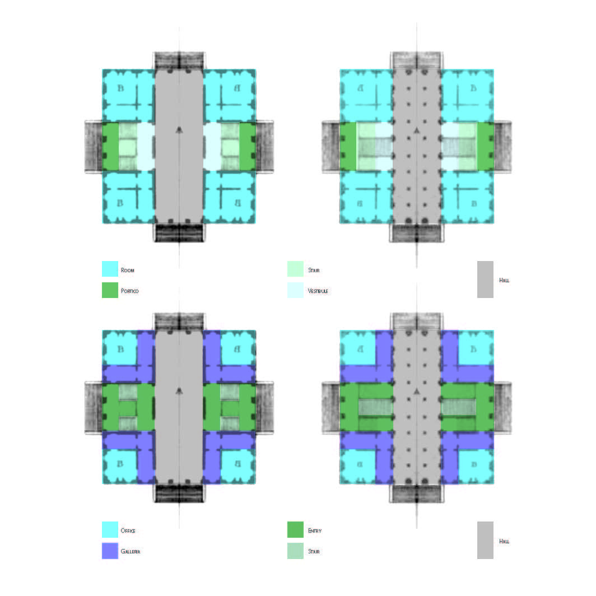
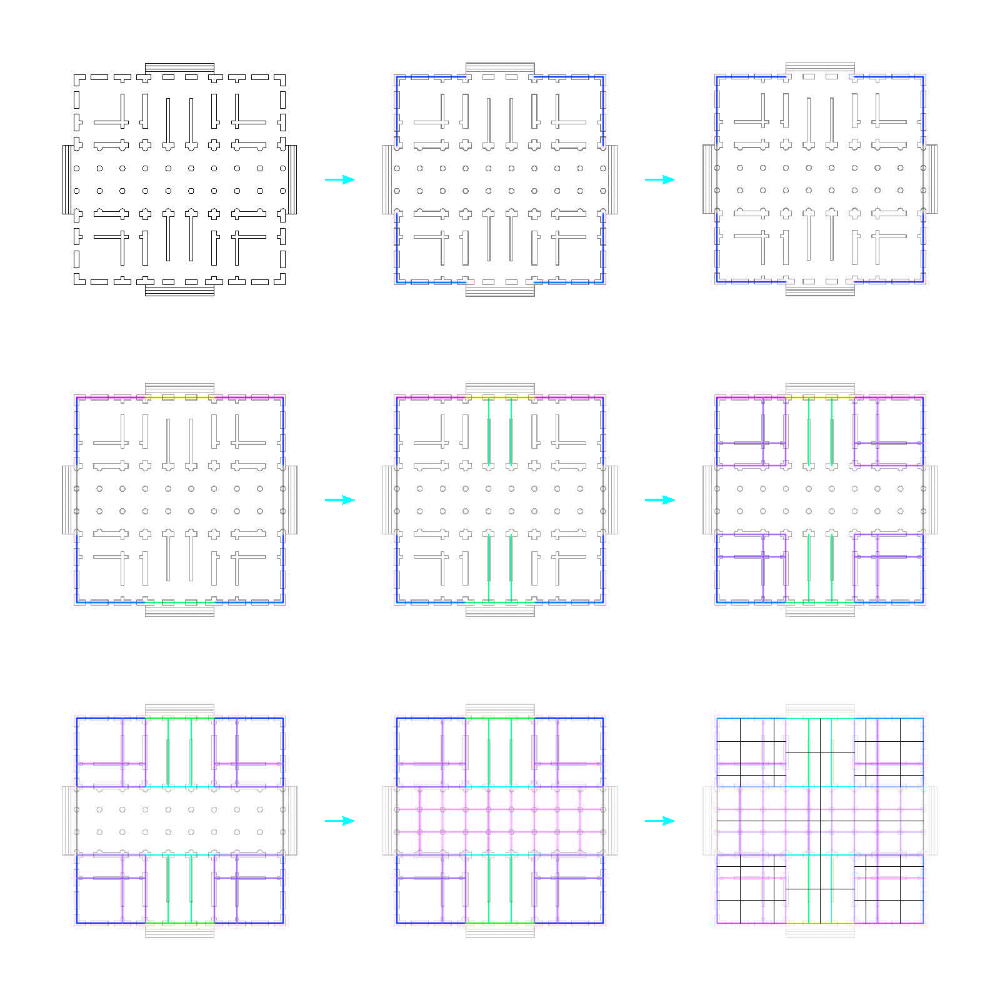
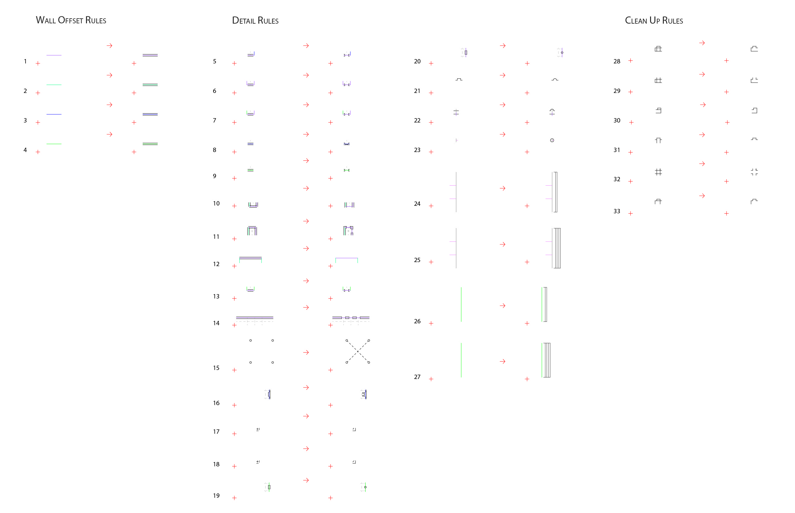
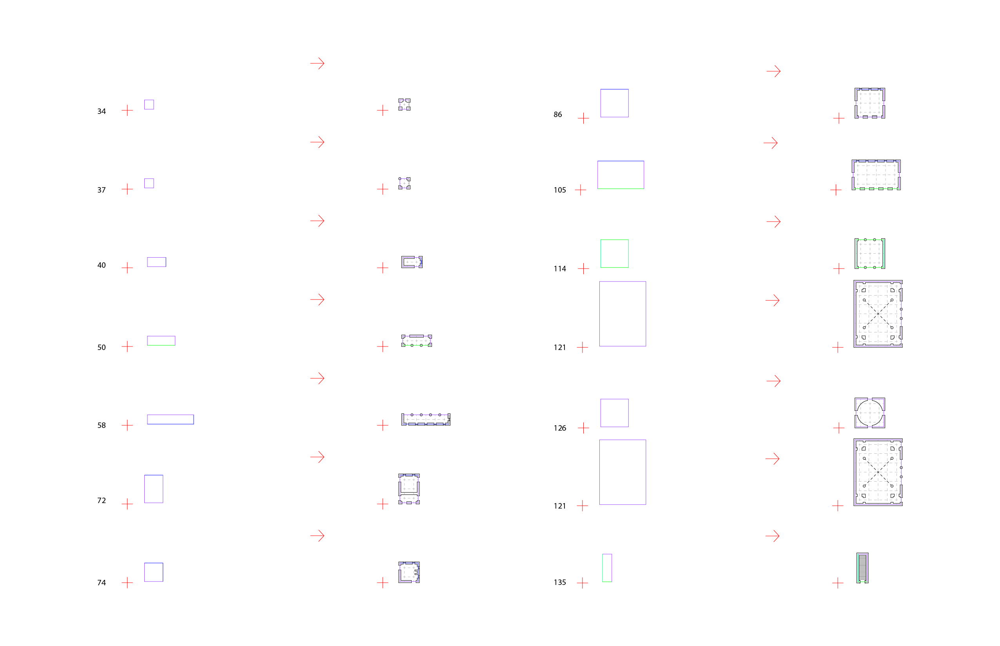
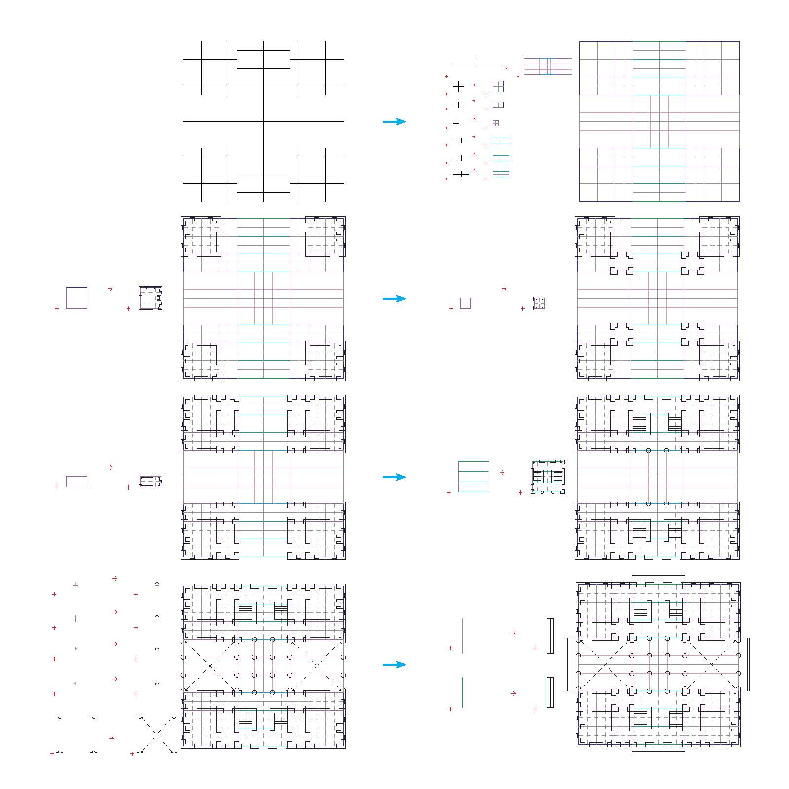
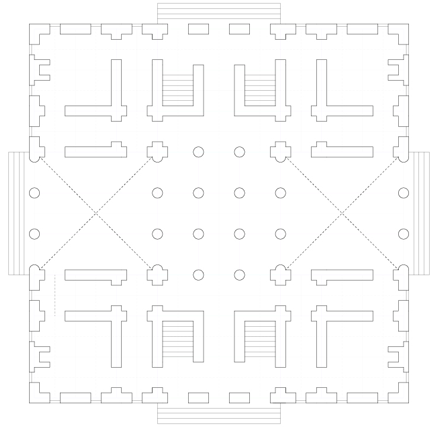
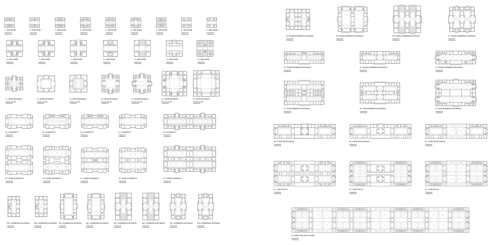
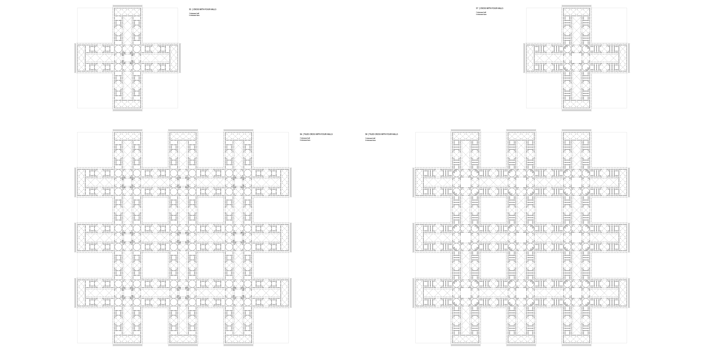

Durandian Shape Grammars
A Language of Town Halls in the Style of Durand
Laudeman, Sara M
ARCH 8866 AE | Fall 2020 | Georgia Institute of Technology
Durand is known to this day for his rigorous descriptions of the proper methods for assembling buildings of many types. The first half of this studio investigation, titled Durandian Shape Grammars, focuses on the typological guidelines set forth in the Precis with regards to Town Halls.
The program elements of the Town Hall are broken down both formally and programatically. Durand highlights the need for office rooms, gallerias for access, and a municipal hall in this typology in addition to the typical parts of a building he specifies throughout the Precis.
“The size of these buildings varies in accordance with the size of the towns in which they are built. We offer as an example a town hall for a place of modest size, in order to show, as with the preceding design, that, although in architecture, as in everything, magnitude is one of the qualities that strike us the most forcibly, a building in which it must necessarily be absent may still be beautiful, providing that the requirements of fitness are fulfilled as they ought to be.”
Durand, “Precis”


A deconstructive sequence highlights the wall centerlines of key building parts: in Durand’s language, these are the room, the galleria, the portico, the vestibule, and the stair. Together, the relational lines, common axes, and building organization imply a room symmetry parti as above. This investigation guides the development of the rules of a durandian shape grammar.

Basic sets of constructive rules are used in the Shape Machine to develop room blocks, which are then applied over a second set of rules to create assemblies.

Starting from the spatial symmetry parti, a series of rules can be applied to locate the part boundaries around the lines of symmetry. These rules are the basic premise of the language. From there, the constructed parts from the previous pages can be applied in various ways based on the perimeter conditions of the parts. In the rules constructed for this project, the Rhinoceros layers are used as “labels” to call out different parts. A series of rules are applied to add offices, gallerias, and vestibules in turn. As a simplification, the entire entry sequence is applied as a single rule. Porticos, stairs, and vestibules are combined into a single condition. The continuation of the language is a series of hall rules. These rules define columns, vaults, engaged columns, and pilasters if there are any. Finally, “cleaner” rules are applied and external stairs are placed on the entry conditions.




This project is continued in Back to the Future, where Durand's rules for town halls are applied to modern workspaces to create an algorithmic process for designing a hybrid municipal office building.